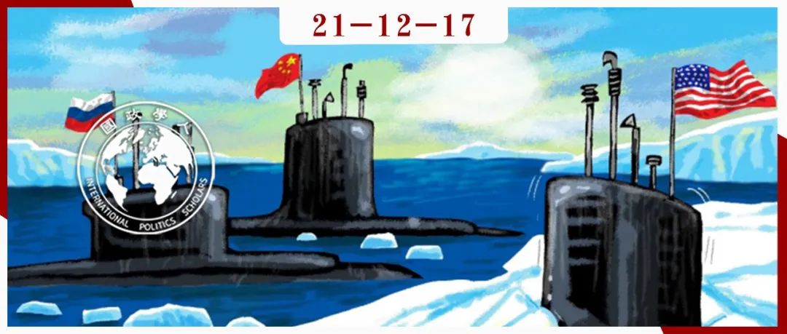

收录于合集 #《国际关系前沿》2021年第12期 22个

作品简介
作者： Rebecca Pincus, 在美国海军战争学院战略与操作研究所担任助理教授，主要研究美国的北极地区战略。
编译： 江若婵（国政学人编译员，伦敦政治经济学院）
来源： Pincus, R. (2020) “Three-Way Power Dynamics” in Strategic Studies Quarterly , 14(1), pp. 40-63.
归档： 《国际关系前沿》2021年第12期，总第39期。

内容摘要
由于北极自然资源集中，未来即将被用作太平洋和大西洋之间的交通走廊，因此它是一个对中美俄大国竞争具有重要意义的新兴地区。俄罗斯在北极的主导地位使得中美关系复杂化。虽然美国大多数的高级安全战略和话语将大国竞争的回归确定为当前的主导安全模式，中国和俄罗斯却通常被分开处理。然而，面临北极问题时，中俄合作是制定美国战略时一个重要的考虑因素。本文将中国在北极的展望放在了中国大战略的背景之下，并评估了中俄北极合作的基础与前景。本文还提出了一个理解中俄北极合作的三轨框架—经济，军事和政治—框架中还存在着控制和信任的问题。
文章导读
01
引言
北极是大国竞争和中美俄之间三角平衡的重要地点。政治学教授Rob Heubert将其称为“新北极三角战略环境”，在这个环境中“三个最强大的国家的首要安全需求在北极重叠”，加剧了紧张的局势。北极是全球经济活动的新兴地区、一个高度军事化和战略性的地区。因此，北极未来的发展将影响美国的大战略目标，包括美国本土的安全以及北约的未来。美国的两个竞争对手，俄罗斯和中国，似乎在该地区有重叠但并非完全一致的利益。
美国国家安全战略(NSS)和国防战略(NDS)明确将大国竞争视为当前主导的全球模式，俄罗斯和中国则是美国的竞争对手。这些战略不仅仅是针对北极地区，同时还侧重于更传统的、优先级更高的关注领域。然而，俄罗斯与中国在北极有根本的安全利益。因此，在该地区的三角地缘政治背景下，美国战略必须处理中俄合作的潜在可能性。但更高层次的美国战略却似乎没有纳入这一前景。核心的战略文件一般将他们分开对待。美国国家安全战略暗示了原因：“中国与俄罗斯渴望在全球范围内投射力量，但他们与邻国的互动最多。”同样，美国海军欧洲- 非洲司令部司令James Foggo对于中俄合作的解读是不屑一顾的：“俄罗斯与中国仍然是互相警惕的合作伙伴，他们对于提议的北极治理与发展有不同的立场。”
本文探讨了中俄在北极地区三个层面的合作所能达到的程度：经济，军事与政治，提供了一个用于了解俄罗斯与中国在北极的利益与活动的框架。尽管“大国竞争”一词有助于理解整体的地缘政治模式，它并没有提供定义且应对广泛挑战所需要的细节—例如俄罗斯与中国开发北极的利益所在—这一点适用于这些维度。
02
中俄合作的经济层面
与中国大战略的总体主旨相一致，中国在北极的主要战略利益是经济—自然资源和潜在的航运路线。中俄合作围绕着两条主轴，这两条主轴同时也符合俄罗斯在开发北极资源上的经济利益—俄罗斯需要外国资本来开发这些资源。继2014年西方实施制裁后，俄罗斯明显转向东方并开始寻求中国投资—直至提议一带一路倡议覆盖俄罗斯的北海航线(NSR)。然而，中俄在北极的经济伙伴关系有可能因控制问题而触礁。
在经济合作的大伞下是两个互相关联的目标。一是开发北海航线，这是一条横跨俄罗斯北部海岸，将东北亚的港口与欧洲、北美的北部港口相连的大航线。二是从俄罗斯北极地区开采可再生与不可再生资源。尽管中国最终对跨北极航运感兴趣，其船只也只能依赖俄罗斯的港口进行加油、补给和紧急暂停。中国专家一致认为，经济是中国大战略的核心。美国国际战略研究中心净评估报告得出了同样的结论，指出“与军事力量的现代化与扩充比较，中国的经济进步和区域经济外沿往往更是大战略的核心重点。”中国并没有推动一项基于价值观的议程，而是将自己定位为互利投资和推动全球繁荣的好伙伴，尤其是在欠发达地区—包括北极。中国追求的是一个双赢发展的全球性发展议程，其中中国的投资，特别是基础设施建设，提供了共同的繁荣。军事实力似乎是跟随而不是引领投资。这种以发展为导向的路径也使中国能够突出它作为帝国主义受害者的过去并与其他后殖民国家建立了共同的身份认同感。正如其在2019年国防白皮书中解释的那样，“中国从一个穷困潦倒的国家成长为世界第二大经济体，既不通过接受他人的施舍，也不通过参与军事扩张或殖民掠夺……中国已竭尽全力通过维护世界和平为自己的发展创造有利环境，并同样致力于通过自己的发展维护世界和平。”以此方式，中国官方说法将和平与发展联系起来，强调了中国与西方国家之间的身份差异。
让一个以经济为基础的大战略沿着贸易线路在全球范围内传播，或是向资源丰富的地区传播，都是明智的举措。这从中国投资的全球格局中可见一斑。中国对北极的关注是可以想见的，原因很多，例如自然资源、贸易走廊（以及供给线路多样性）和气候变化。海冰一旦消退，穿越北极的航线会变得越发可行，为当前中国、北欧、北美之间的航线提供了理想的替代方案。尽管北极沿海国家普遍都是高收入国家，整个地区却严重缺乏基础设施，这使得北极与中国的大战略保持了一致。2018年初，俄罗斯宣布其北海航线将被纳入中国庞大的“一带一路”倡议。有时这也被成为冰上丝绸之路。与普遍看法相反，是俄罗斯人最先提出了这条极地丝绸之路。2014年以前俄罗斯的冷淡，与其在乌克兰危机之后与中国在北海航线方面合作的热情，形成了鲜明的对比。此外，学者们表示，在2014年之前中国的一带一路项目被认为是对俄罗斯在中亚的利益与影响力的威胁。因此，正式将俄罗斯北极地区与中国一带一路联系起来的决定标志着一个重要的变化，也标志着俄罗斯承认有必要深化中俄北极合作。
尽管进行了这些合作性的开拓，但专家对于中俄在北海航线- 一带一路一体化方面的合作程度有不同的观点。一种观点认为中俄合作一直被“不同的利益、相互冲突的计算和截然不同的成本利益分析”所阻碍。在中国的观察人士们指出俄罗斯的顽固的同时，俄方的评论常常进行反击。例如，Alexander Vorotnikov指出，虽然中俄双方都对北极发展与合作有兴趣，“但是俄罗斯坚持自己必须获得优先权，因为北极是最重要的地区。“西方的制裁措施促使俄罗斯更热切地寻求中国投资，尽管俄罗斯仍然是一个难对付的合作伙伴，但考虑到官方修辞的水平，实际达到的效果可能远远达不到期望值。
除了北海航线的基础设施发展，中俄还大力宣传在开发北极资源方面的合作，尤其是石油和天然气项目。作为一个资源开采型经济体，俄罗斯依靠原材料的开发来维持经济。2017年的油气出口仍占据出口商品的59%以及25%的财政总收入，使得俄罗斯过度依赖这些出口。中国则是一个进口大国，因此俄罗斯资源与中国需求的结合似乎是经济伙伴关系的合理基础。然而，中俄在北极资源方面的合作项目同样没有达到它的高期待和高调宣传。2018年一份基于中俄关于北极发展合作的数据的分析报告揭示了两个有趣的模式。一是中俄在北极的项目在双方不同的出版物中“经常被歪曲”。二是项目的成功率越来越低，考虑到中俄北极合作的宣传程度，这其实在意料之中。作者指出，“超越政治宣传是非常困难的”。他们认为低于预期水平的实际伙伴关系是由于预期的不匹配：一方面，鉴于其对于国家安全的战略重要性，俄罗斯人希望保留对北极发展的完全控制权，因此他们想要中国的投资资金，却不希望中国参与决策。另一方面，中国投资者“不情愿投资非常昂贵且高风险的项目，除非他们能在管理层获得一席之地，并拥有投票权。”此外，中国对参与北极开发项目有兴趣是为了提高技术专长和工业能力，而俄罗斯通常高度保护其专长。
萧条的投资也可以部分归因于俄罗斯的投资气候。分析人士认为，俄罗斯的投资协议既不透明也不一致，而且相关规定经常变来变去。正如一位中国学者所说，“俄罗斯的投资环境并不友好。法律体系运行不力，腐败猖獗。俄罗斯通常口惠而实不至，在合作中很少采取行动。”
中国可能感兴趣的另一种北极资源是海鲜。该地区拥有世界上两种生产力最高的渔业。到目前为止，北冰洋中部没有任何商业性渔业；事实上，在2017年，包括中国在内的一批极地国家和非极地国家签署了一项暂缓北极中部捕捞的一项协议。这样的官方暂停是为了给科学家足够的时间充分了解北极的渔业结构，准备制定可持续渔业管理计划。中国方面影响了有关这项暂停的相关谈判。在全球渔业衰退的情况下，对北冰洋中部尚未开发的海产品资源的需求可能会增加。
虽然中俄双方的利益一致（俄罗斯作为资源供应商，中国作为资源客户），但他们的合作却因双方都想控制项目，或者在项目中占据领导地位，而受到阻碍。中俄北极合作对美国战略的利害关系非常明显：在三角背景下，美国削弱俄罗斯经济的努力可能会加强中国在俄罗斯的经济影响力以及双方的政治合作。
03
政治层面
中国正在与所有北极国家建立关系，以增加其对于有关北极地区未来的决策的影响力。政治维度的考虑导致了中俄双方在长期大战略目标上一次相对直接的冲突。俄罗斯历来“嫉妒性地”保护着其在北极地区的特殊地位。相比之下，中国正在合法地寻求自己在当地的利益，并试图影响北极未来的发展。与俄罗斯这个占主导地位的北极强权合作虽然复杂，但无疑是可取的。在这方面，俄罗斯因其北极超级大国的地位而变得不那么脆弱；然而，它落后脆弱的经济限制了自己行动的自由。短期内，北极合作符合中俄的战略利益，并使得美国的战略目标复杂化。从地理角度来看，俄罗斯主导北极盆地。因此，中俄有效合作的前景增加了影响力本地化的可能性，即中国的能力可以与俄罗斯的地缘联合行动。俄罗斯对中国的投资感兴趣；反过来，俄罗斯可以提供中国矿产资源和北海航线。此外，通过与俄罗斯合作，中国可以扩大其在北极理事会和制定区域议程过程中的作用。两国”可以利用各自的优势与权威在北极地区国际关系体系形成的过程中发挥重要作用“。
中国清楚地意识到，其为在北极谈判桌上获得一席之地所作的努力并没有受到一致的欢迎，俄罗斯对此尤为忧喜参半。加入北极治理的一种方式是参与北极理事会：经过几年的努力，中国于2013年被授予观察员的地位。俄罗斯的不情愿曾是推迟承认中国作为观察员进入北极理事会的部分原因。北极理事会成立于1996年，是该地区最高级别的政府间论坛和事实上的治理组织。其中有一种叫做观察员的国家和组织。他们没有平等参与理事会讨论的权利，但可以出席会议并应邀参加讨论。
值得注意的是，俄罗斯并不是中国在北极唯一关注的焦点。中俄在北极的合作可以理解为两国之间尚未解决的平衡问题。俄罗斯需要外国资本来为北极开发提供资金，但寻求保持控制—无论是政治上还是特定的投资项目上。中国希望获得北极资源，参与政治决策过程，且愿意使用经济工具作为影响他人的手段。
04
军事层面
许多迹象表明，中俄的安全伙伴关系日益密切。尽管中国在北极并没有军事存在，它仍然要维持在该地区的利益。因此，评估当前中俄安全合作的水平与前景对于了解北极地区大国竞争的整体前景至关重要。北极是俄罗斯的安全堡垒，军事维度的潜在中俄合作因而高度敏感。俄罗斯海军以及俄罗斯军方的一些其他成员一直是对华鹰派，而且在俄罗斯的某些地区，尤其是远东，中国的影响力被视作潜在威胁。中国似乎正在寻求极地能力，包括破冰船和可以在极地航行的潜艇。未来的中俄北极军事合作将直接影响美国及其北约盟国在北极的安全地位。正如在经济层面一样，虽然安全合作符合中俄制衡美国的利益，但其中仍然存在着根深蒂固的摩擦，可能最终导致合作触礁。中俄军事合作被描述为“两个既不是敌人也不是盟友的国家之间的更为平衡的（虽然有限）安全伙伴关系，双方共享一些安全忧虑，例如平衡美国及其盟友“。俄罗斯与中国分享在北极潜艇方面的专业知识的意愿程度可能表明了双方安全伙伴关系的局限性。此外，俄罗斯大部分的战略部队集中在北极西部的科拉半岛。因此，北极在俄罗斯总体大战略中的优先地位将深深复杂化任何中俄在该地的安全伙伴关系。
一些观察人士注意到了中国在北极可能拥有的军事战略利益。格里利堡导弹基地(The Fort Greely missile complex)可能会瞄准中国，而北方的深水航线则可以提供理想的潜艇航线。北极航线还为中国提供了解决马六甲困境的另一种选择，并将俄罗斯石油用作中东石油的一种代替方案，从而巩固了国家安全。
中国专家似乎认识到了俄罗斯认为北极地区存在着安全问题。一位知名的中国国际政治学者写道，“俄罗斯的北部边界不再和平。对中国来说，与俄罗斯发展战略关系可以帮助它稳定北部边界以便转向海洋”—换句话说，这可以给它更多空间来处理与南边的邻国的海上争端。在北极战略三角背景之下，中国受益于俄罗斯对美国和北约的安全关注。
中俄军事合作深化可能是为了应对与美国日益紧张的关系。虽然中国尚未在北极建立军事存在，它似乎正在追求破冰船和潜艇北极航行能力。北极战略海上航线为中国提供了战略资源和马六甲海峡以外的选择，与俄罗斯的伙伴关系则让中国在获取和保护北极战略海上航线方面的利益更加合乎情理。在寻求保护其北极资源和领土的过程中，俄罗斯可能乐见中方的军购以及与中国的伙伴关系对美国的制衡。然而，这段蓬勃发展的伙伴关系生来自带高度的紧张。
05
结论
许多分析人士指出，2014年是中俄关系整体的一个转折点，尤其在北极合作方面。对中国来说，西方对俄罗斯的制裁是一个乐见其成的买方有利时机(buying opportunity)。中国乐于填补制裁造成的市场空白。乌克兰危机爆发以来，美国再次选择同时牵制中俄，大大加强了中俄战略伙伴关系。尽管制裁是美俄关系关系上宏观的重要组成部分，其对中俄的北极合作可能产生了出乎意料的影响。尚无明确证据表明美国战略家正在认真看待中俄在北极地区的合作前景。通过象征性地将中国和俄罗斯归为一组竞争对手，美国可能会在不经意间为更实质性的中俄合作提供动力。鉴于俄罗斯在北极地区的影响力和主导的地理位置，这种后果很可能代价高昂。
中俄北极合作服务于两国的短期利益以及中国的长期目标。然而，俄罗斯并不想成为中国的一个地位较低的伙伴。而且，俄罗斯在北极地区的战略军事地位将受到中国在该地的军事存在的威胁，因此，随着中国进一步朝着部署多战区的目标迈进，中俄伙伴关系的长期可行性仍然高度存疑。在北极战略三角的背景下，美国必须同时考虑对中国和对俄罗斯的战略。考虑到该地区国家之间的紧密联系，对其中一个国家采取的行动将不可避免地影响到另一个。北极发展和治理的未来的轮廓具有高度弹性，取决于外部大国力量的变化。
译者评述
本文是一篇专攻北极地区的区域研究，主要研究问题是北极地区中美俄三方的权力平衡，核心的理论框架是一个三轨框架，即政治、经济、军事，最终得出了美方制裁压力将极大促使中俄搁置分歧，在北极进行多方面合作的结论。
本文的研究问题非常值得讨论，因为无论是大众还是相关的评论人士，一般很少有人关注北极地区，只是将它当作是俄罗斯传统的后花园，几乎从没有将此地当作大国竞争地点看待。北海航线(NSR)的重大战略意义、北极国家缺乏基础设施建设的事实以及珍贵的渔业资源大都鲜为人知。因此这篇文章在一定程度上丰富了北极区域研究的文献。另外一点是由于近来美国政府的北极战略一直将中俄两国分开对待，忽视了他们在该地合作的可能性，本文便顺势填补了这方面的空白。因此，本文的一大学术贡献就是研究了相对来说比较冷门的话题。
本文的另一大学术贡献是非常清晰明了地分析了中俄合作的优势和劣势，不仅仅适用于北极地区，同时也适用于中俄其他方面的合作。美方高级官员一直对中俄合作的潜力不屑一顾，某种意义上还是有道理的。文中描述中俄关系最恰当的一句话是“两国既非敌人也非朋友”。双方的关系并没有好到如同北约诸国那样，愿意为了对方的利益卷入与己无关的军事行动里。远东地区的高度敏感性、俄方恶劣的投资环境、俄方既想获得投资又不愿让出话语权的复杂矛盾心态都成为了中俄合作的障碍，而且短期内似乎很难改变，使得中俄合作始终有一个上限。但是，美国对双方施展的压力使得双方别无选择，只能合作。两国也都意识到了俄罗斯的地缘位置与中国的经济实力相结合所能迸发出的巨大潜力，只有这种潜力才能制衡世界上唯一的超级大国。美国的制裁因而成为了中俄合作的最大动力，只要这个动力尚存，中俄之间的任何其他摩擦都将为抗衡美国让路，成为次要矛盾。最明显的案例就是俄罗斯于乌克兰危机之后的态度大转变。
此外，本文也指出了“大国竞争”一词的局限性。对于现实主义者来说，这个词将目前全球总体模式概括得很好，但是如果不进行进一步的阐述，从经济、政治、军事各个方面分析，“大国竞争”一词很容易流于空泛。读者还可以发现中国在北极的所有行动都是符合1978年改革开发以来“以经济建设”为中心这一指标的。仅仅从本文的篇幅就可以看出，经济方面的研究几乎是政治与军事方面之和。中国几乎所有的军事行动都是由经济活动主导，而非相反。
词汇整理
细节 G ranularity
失败，触礁 Founder
大胆的开拓 Adventure
拒不服从，桀骜不驯 Recalcitrance
暂停，中止 Moratorium
卖主，销售商 Vendor
脆弱的 Brittle
进入权 Entrée
不经意地 Inadvertently
使参加战斗 Field
审校 | 穆若彤 张曼娜
排版 | 云琪布日 彭雯昕
文章观点不代表本平台观点，本平台评译分享的文章均出于专业学习之用, 不以任何盈利为目的，内容主要呈现对原文的介绍，原文内容请通过各高校购买的数据库自行下载。

国政学人
支持学术公益与知识传播
微信扫一扫赞赏作者 __赞赏
已喜欢，对作者说句悄悄话
取消 __
发送给作者
发送
最多40字，当前共字
上一页 1/3 下一页
长按二维码向我转账
支持学术公益与知识传播
受苹果公司新规定影响，微信 iOS 版的赞赏功能被关闭，可通过二维码转账支持公众号。